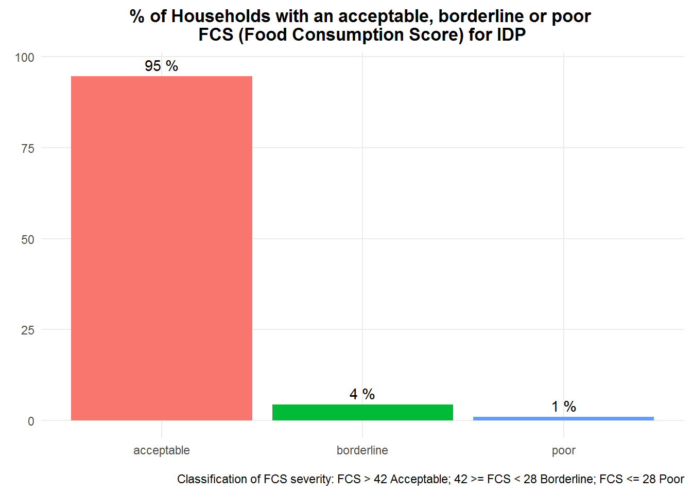
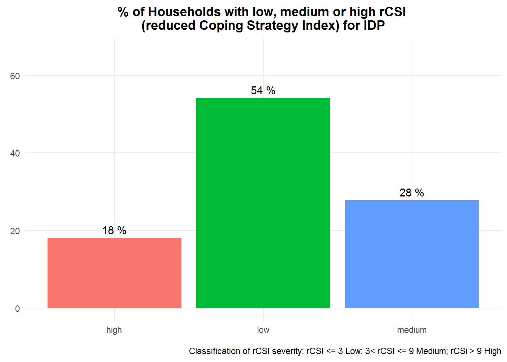
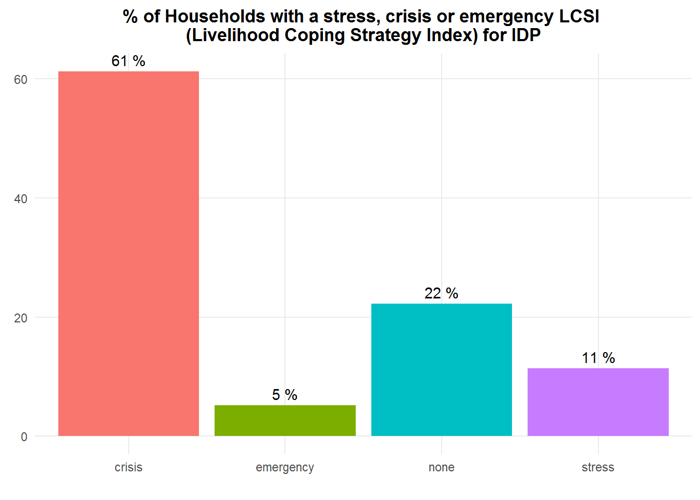
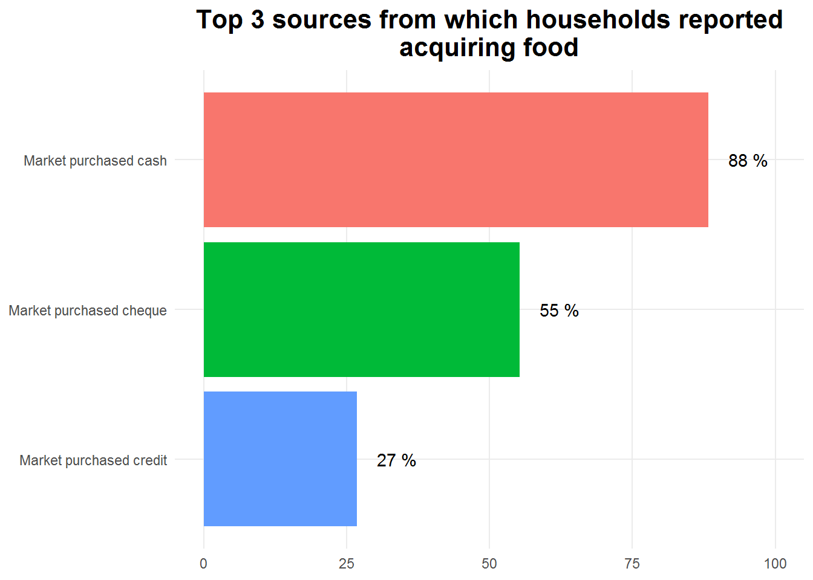
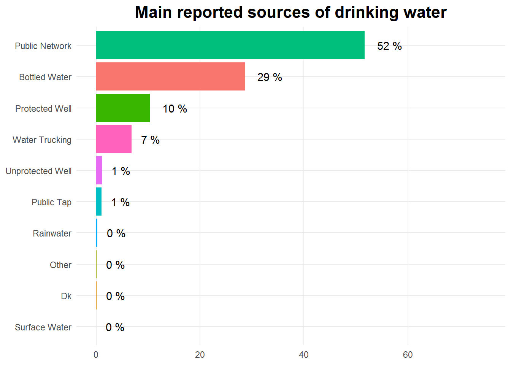
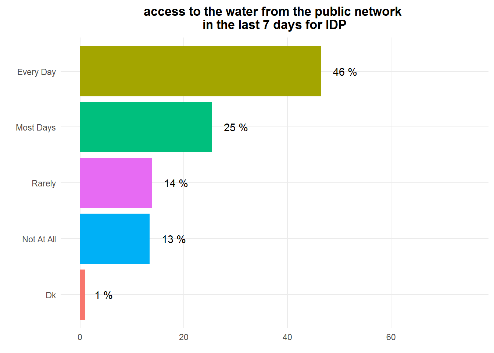
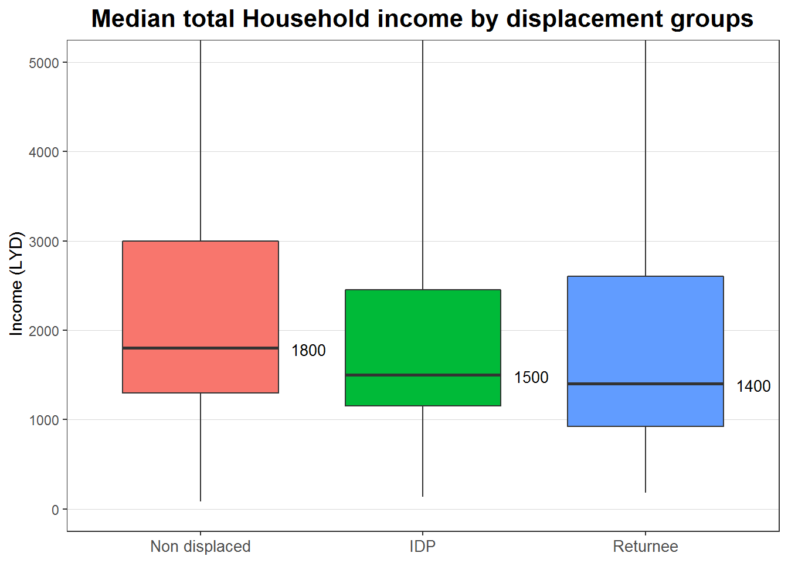

This sample Data visualization report was drafted to be submitted as part of my candidature for the consultant DATA Analytics Position within the GMDAC. This work was uploaded to the following Github repository (https://github.com/hedibmustapha/consultant_data_analytics_GMDAC) and made public.
The different data preparation steps and all R codefor functions and weighted sumamries statistics are included in this Rmarkdown script.
The raw dataset used in this report was downlaoded from IMPACT document repository, an online platform providing access to reports, factsheets, maps and other information products. Dataset and samlping frame csv files are in the input folder of this R project.
Link to the dataset (https://www.impact-repository.org/resources/view-resource/?id=25282).
The main packages used to draft this report are:
rmarkdown: provides an authoring framework for data science.
srvyr: For Weighted Summary Statistics Of Survey Data.
dplyr: A Grammar of Data Manipulation.
ggplot2: Create Data Visualisations Using the Grammar of Graphics.
gganimate: Extends the grammar of graphics as implemented by ggplot2 to include the description of animation.
Project background
In response to a lack of recent data on the humanitarian situation in Libya, REACH conducted a multi-sector needs assessment (MSNA) from July-September 2019 to provide timely information on the needs and vulnerabilities of affected populations.
Sampling Strategy
A total of 5,058 household (HH) surveys were completed across 17 Libyan mantikas. Respondent households were selected using two-stage random sampling to enable comparison among the population strata: IDPs, returnees and non-displaced populations. The geographic strata are the mantikas, and the primary sampling unit is the mahalla. The sampling produced statistically generalisable results for all assessed displacement categories, as well as for the 17 assessed mantikas, with a confidence level of 95% and a margin of error of 10%






